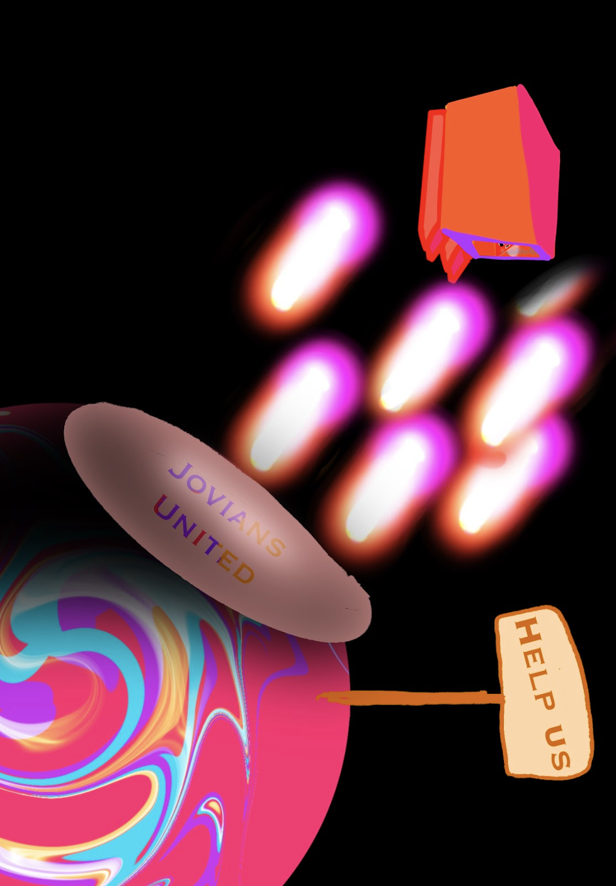

The Jovians Story
Once upon a time, there were the Jovians. They lived on a Jovian planet called Jurassic. Because of their smart and intelligent nature they were able to make their Jovian planet into a rocky one. One day, their leader, full of corruption and wanting power, called the destroyer to destroy all the land. It was dreadful! They would be terrorized and they had to move fast, so they fought for their planet with all their might. The only thing they could do was play a trick. They put holograms so when they got hit they would look like they're dead. They did this knowing that if they tried to fight, they would die. With the robots fighting the destroyers, they had hope they would win.
A few years later, they had robots go to Vacanta, a nearby planet with beautiful pinks and blues, to clean the air and make it habitable. The final thing they needed was to make robots go and defend their home planet. Unfortunately, it was too hard so they fought and fought amongst each other.
Some said, “it's the only way to protect our young ones and our civilization”.
“No, we need to stay to protect our planet” said the other Jovians.
This took ages to get resolved but Jovians still wanted to stay so they said with no hesitation, "if you want to stay then stay but the young ones shouldn’t live in a hostile environment. So we suggest that we will return and fight, but we must first pick ourselves up again and have more advanced technology and more allies”.
A few years later, they learned the ways and tricks to live on this amazing planet, Vacanta. It sticks out with orbs in the side of it in shades of purple and blue on the top of the orb transitioning outwards to purple. Lakes and grass that can be seen from space are visible surrounding the sides, and one big curved grass field positioned in the middle. Vacanta is a unique place, but things were about to get messy.
Then the Jovians saw a black hole right in their solar system but instead of sucking them it was closed but had this strange property that instead of consuming it would Bring back things from different places, even space ships. but one day they found a human about to die but then they saved him. Some said “why did you save this creature? It must be part of colonization like the destroyers trying to voyage our planet.” The others said” That's not the same at all, it was our ruler who did this dreadful fate to us” Then the human woke up and thought he was in heaven but he wasn’t and he felt it was weird super weird being there they were able to bring him back to his time. Then he told the humans and then the humans sent a contract to them saying this:

Some thought it was a good idea to sign this contract while others absolutely did not. Some agreed while others said “no no no, have you not heard of deception?”. This argument continued and grew first into a war, then into separation for years and years to come. One day, they saw a human child from Earth playing with a Jovian child. They had weapons in their hands but when looking in the human child’s eyes, they only saw kindness and purity. This inspired them because of how they kept on fighting. If a Jovian child could do it, so could they. So they signed the contract and put the stamp of acceptance on it, showing that all the Jovians agree. There was still a little conflict, but the conflict wouldn’t last forever. They brought back the human child home to Earth to his time. Now let us learn from the Jovians that we fight for things that are not necessary, and sometimes criticize people for being different. Our differences are what make us unique. If we try to elect better governments and try to use our common sense, then maybe we’ll find peace. When we do, we can achieve major things. That is how our fantastic Jovians became the Jovians we now and love today.